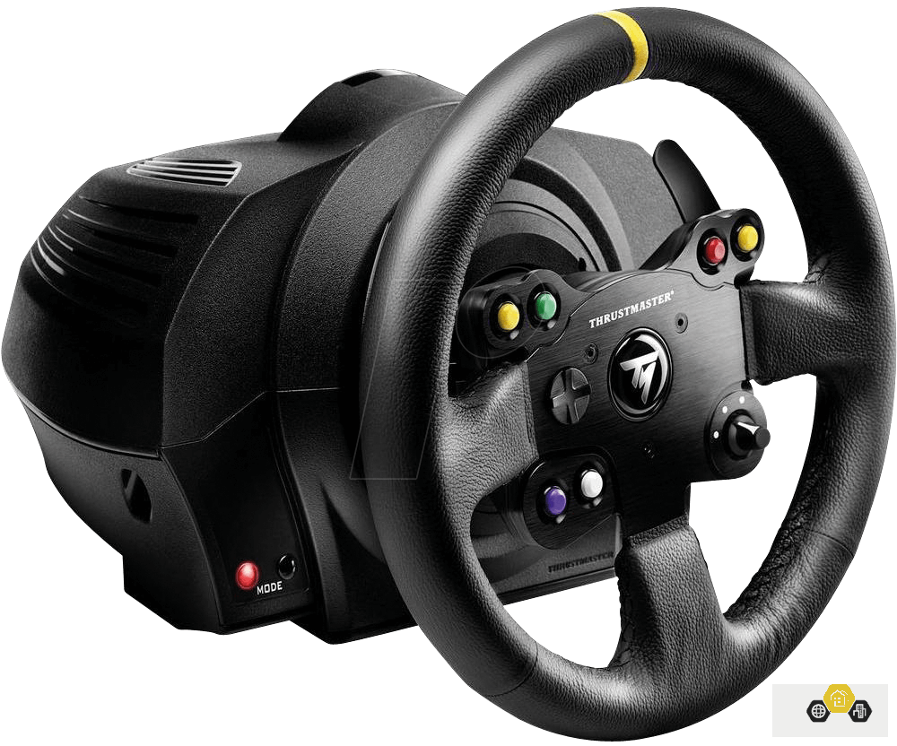

Hardware


WHEELS
Thrustmaster TMX
Features
Strong force Feedback
2-Pedal Board
900-degree wheel rotation
Compatible with PC and Xbox One
Belt+gear force-feedback system
12 buttons + D-pad
Price: 180.-

Thrustmaster TMX
Pros and Cons
Pros
Strong Force Feedback
Good Build Quality
Great Overall Expirience
Cons
Low Quality Pedals
slightly rough wheel rotaition
Lacks subtlety
